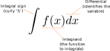
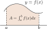
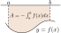

Integration: Definitions and basic concepts
Introduction to Engineering Mathematics
Indefinite integrals
Indefinite integrals as antiderivatives
- Antiderivative: the opposite (inverse operation) of a derivative.
- The indefinite integral is an antiderivative.
Examples:
- \(\displaystyle \frac{d}{dx} \frac{x^3}{3} = x^2\), so \(\displaystyle \int x^2 dx = \frac{x^3}{3} + C\)
. . .
- \(\displaystyle \frac{d}{dx} \arcsin(x) = \frac{1}{\sqrt{1 - x^2}}\), so \(\displaystyle \int \frac{dx}{\sqrt{1-x^2}} = \arcsin(x) + C\).
. . .
In these examples, \(C\) is an arbitrary constant.
Anatomy of an indefinite integral

Examples
Polynomials:
- \(\displaystyle \int x^n \, dx = \frac{x^{n+1}}{n+1} + C\) for \(n \ne -1\)
- \(\displaystyle \int \frac{dx}{x} = \ln |x| + C\)
Trigonometric functions:
- \(\displaystyle \int \sin x \, dx = - \cos x + C\)
- \(\displaystyle \int \cos x \, dx = \sin x + C\)
\(\displaystyle \int \tan x \, dx = - \ln |\cos x| + C\) 😱
Not an obvious antiderivative; we will see how to derive this integral later.
Examples
Exponential/logarithmic functions:
- \(\displaystyle \int e^x dx = e^x + C\)
- \(\displaystyle \int \frac{dx}{x} = \ln |x| + C\)
Inverse trigonometric functions:
- \(\displaystyle \int \frac{dx}{\sqrt{1 - x^2}} = \arcsin(x) + C\)
- \(\displaystyle \int \frac{dx}{1 + x^2} = \arctan(x) + C\)
Examples
Special cases:
- \(\displaystyle \int \sec^2 x \, dx = \tan x + C\)
- \(\displaystyle \int \csc^2 x \, dx = - \cot x + C\)
- \(\displaystyle \int \sec x \tan x \, dx = \sec x + C\)
- \(\displaystyle \int \csc x \cot x \, dx = - \csc x + C\)
Definite integrals
The definite integral
Definite integral: integral with “bounds”
How to compute:
- Find primitive function \(F(x)\): \(\displaystyle \int f(x) \, dx = F(x) + C\)
- Substitute bounds into \(F(x)\): \(\displaystyle \int_a^b f(x) dx = F(b) - F(a) = F(x) \Big|_a^b\).
Examples
Compute:
- \(\displaystyle \int_0^{\pi/2} \sin x \, dx\)
- \(\displaystyle \int_{-1}^2 (x^2 + 2x -1) \, dx\)
Properties of the definite integral
- \(\displaystyle \int_a^a f(x) dx = F(a) - F(a) = 0\)
- \(\displaystyle \int_a^b f(x) dx = - \displaystyle \int_b^a f(x) dx\)
- Linearity: \(\displaystyle \int_a^b (Af(x) + Bg(x) ) dx = A\int_a^b f(x)dx + B\int_a^b g(x)dx\)
- \(\displaystyle \int_a^b f(x) dx + \int_b^c f(x)dx = \int_a^c f(x)dx\)
Definite integrals correspond to signed areas
If \(f(x) \ge 0\): \(A = \int_a^b f(x) \, dx\).

If \(f(x) \le 0\): \(A = - \int_a^b f(x) \, dx\).

If \(f(x)\) changes sign: break up into parts above/below \(x\)-axis.
Examples
Find the area…
- Between the graph of \(y = \sin x\) and the \(x\)-axis, from \(0\) to \(2\pi\).
- Below the graph of \(y = 3x - x^2\) and above the \(x\)-axis.
Properties (continued)
- For an even function, \(\displaystyle \int_{-a}^a f(x) dx = 2 \int_0^a f(x) dx\)
- For an odd function, \(\displaystyle \int_{-a}^a f(x) = 0\).
- “King’s rule”: \(\displaystyle \int_0^a f(x) dx = \int_0^a f(a - x)dx\).
Continuity and integration
So far, we have silently assumed \(f(x)\) is continuous on \([a, b]\) to define the integral \(\int_a^b f(x) dx\).
The integral can also be defined if \(f(x)\) is piecewise continuous.
Examples
Compute the following integrals:
- \(\displaystyle \int \left( 10x^4 - \frac{2}{\sqrt{1 - x^2}} \right) \, dx\)
- \(\displaystyle \int_0^1 x^{5/2}(1 - x) \, dx\)
- \(\displaystyle \int \frac{x^2}{1 + x^2} \, dx\)
Examples
Show that \(\displaystyle \int_0^{\pi/2} \frac{\sin x}{\sin x + \cos x} dx = \frac{\pi}{4}\).
Difficult, uses King’s rule.
Fundamental theorem of calculus
Integrals and derivatives are each other’s inverse
- If \(\displaystyle G(x) = \int_1^x \ln y \, dy\), find \(G'(x)\).
- If \(\displaystyle H(x) = \int_1^{x^2} \ln y \, dy\), find \(H'(x)\).